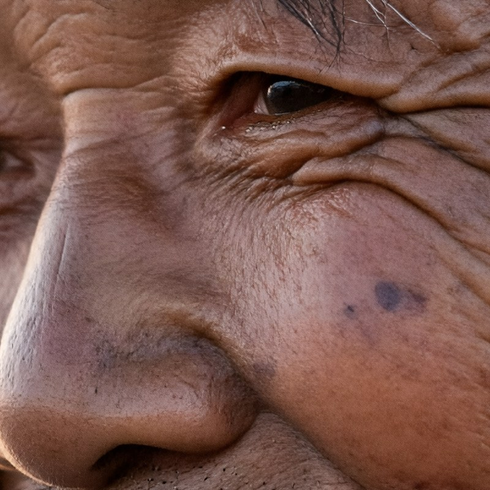

Making and editing still images
From v0.10.0, H3cApp makes still images in the same window as videos. Draw a picture from a prompt, change one of your own with an instruction, and use the result as the first frame of a video. All of it runs on your Mac.
Examples
Every picture on this page is AI-generated (by H3cApp's image generation with P-H3-Image; Powered by MiniMax H3). They are shrunk to JPEG for the page.

From text · 1024×1024
8 steps, seed 1. Took 35 s (M5, 24 GB).
A yellow enamel teapot and a white cup on a blue wooden table, with a small handwritten sign that reads "OPEN" leaning against the teapot.
Edit, with the left picture as reference · 1024×1024
8 steps, seed 5. Took 2 min 17 s (M5, 24 GB).
Edit <Picture 1>. Replace the white cup with a small green ceramic bird. Keep the teapot, the sign and the table.

From text · Extra Large (2496×3360, about 8 megapixels)
8 steps, seed 7. Took 3 min 58 s (M5, 24 GB).
A close-up portrait photograph by an experienced documentary photographer of an elderly Japanese fisherman on a harbor at dawn, his weathered face filling the frame, deep wrinkles, sun spots and stubble on his cheeks, a faded navy knit cap, soft side light from the low sun on the left, shallow depth of field.

Part of the Extra Large picture (800×800 at full size)
P-H3-Image does best at 8 megapixels. Seen without shrinking, the skin is drawn down to fine detail.
Made during development by running the same processing as v0.10.0 from the command line. The same prompt and seed can give different results on another Mac or with other settings.
The two image models
Still images use an image model separate from the video model. There are two to choose from; you can install both and switch with the model menu in the panel.
| MiniMax H3 Image | P-H3-Image | |
|---|---|---|
| Made by | MiniMax | Pruna AI (an image model built on MiniMax H3) |
| Download | About 22 GB. It uses the text encoder of your installed video model, so the video model comes first. | About 29 GB (no video model needed). With a video model installed, about 10 GB instead: the included LoRA is applied to the video model's DiT (generation takes about twice as long). |
| Steps | 6 | 8 |
| Strengths | Speed, and edits with many references | Photographic texture. Best at 8 megapixels (the “Extra Large” size) |
| References for an edit | Up to 16 (15 for square pictures) | Up to 8 |
| License | MiniMax-H3-Image Community License Agreement (separate from the video model's) | MiniMax H3 Community License Agreement (the same as the video model's) |
Pictures from the same prompts, side by side, are on Comparing still images, together with the ways to enlarge a picture.
Installing a model
- Choose “Image” with the switch at the panel's top left. The video side and the image side each keep their own prompt and settings.
- Pick the model to install from the model menu. There are three: “Download Image Model (MiniMax H3 Image)…”, “Download Image Model (P-H3-Image)…” and “Download Image Model (P-H3-Image, Using the Video Model)…”.
- Read the license summary shown and start the download. If it stops, the next start resumes where it left off. When it finishes, every file is checked against the pinned version before the model is registered.
The same downloads can be started from the image models in the “Model Manager”.
Making images
- Write a prompt. With P-H3-Image, say in the first sentence what kind of photo or picture it is, and describe the scene concretely.
- Choose shape, size and count. Shapes are Square, Landscape and Portrait. Sizes are “Standard” (1024×1024 or 1344×768), “Large” (twice that), “Extra Large” (about 8 megapixels, 2912×2912 or 3808×2176) and “For video” (the video's size). Count is 1 to 20.
- Press the generate button.
- Seed: the seed control at the top of the panel chooses between a new seed every time and a fixed one. With a fixed seed, the same settings give the same picture. When making several, only the first uses that seed.
- Where pictures go: into the project's
imagesfolder as a PNG with its settings record (.json) and latent file. The PNG carries metadata saying it is AI-generated. They are listed with the videos under “Project Videos and Images…”. - Import: “Import” makes an image file of yours one of the project's pictures (saved as PNG).
Editing images
Give reference pictures and say in the prompt how to change them, and you get the changed picture. The same image model does the edit, so there is nothing more to download.
- Choose the picture to edit. Press “Edit This Image” on a picture in the preview or the list. For a file of your own, use “Add Reference Images…” at the top of the panel.
- Write what to change and what to keep. Call the references by number, like
<Picture 1>(pressing the<Picture 1>under a reference puts it in the prompt).
Example:Edit <Picture 1>. Replace the white cup with a small green ceramic bird. Keep the teapot, the sign and the table. - Press the generate button.
- Several references: line up several; the numbers follow the order, which you can change with a right-click. Example:
Edit <Picture 1>. Replace the cup with the bird from <Picture 2>.More references take more time and memory; an estimate of the memory needed appears under them. - Size: adding the first reference sets the size to that picture's shape. You can change it afterwards. With P-H3-Image it is set within 4 to 8 megapixels, where the model edits best.
- Say what to keep: with P-H3-Image,
Edit <Picture 1>.is put in front of your instruction. Describe the result you want and what must stay (faces, poses, background, light); without that, it tends to redraw the whole picture. - Record: an edited picture's record lists the pictures it came from. Reference files are copied to the project's
referencesfolder.
From a picture to a video
Press “Make a Video from This Image” on a picture to set up a video that starts from it (if the video prompt is empty, the picture's prompt goes in too). Under “More” it can become the last frame or a reference instead. Settle the opening shot as a still first, then set it in motion, instead of generating the start of a video again and again.
How to make the video is in the Guide's Making video from images.
How long it takes
| What | MiniMax H3 Image | P-H3-Image |
|---|---|---|
| 1024×1024 | about 35 s | about 35 s |
| 2048×2048 | about 1 min 40 s | about 1 min 50 s |
| 2912×2912 (Extra Large) | — | about 4 min |
| Edit: one reference to 1024×1024 | about 1 min 20 s | about 2 min 20 s |
| Edit: one reference to 2048×2048 | about 2 min 40 s | about 5 min |
Licenses
- MiniMax H3 Image: comes under the MiniMax-H3-Image Community License Agreement, a separate agreement from the video model's. In the EU, the UK, South Korea and the US, neither the model nor the pictures made with it may be used.
- P-H3-Image: comes under the same MiniMax H3 Community License Agreement as the video model. Products and services using it display “Powered by MiniMax H3”.
- For both, the app shows the main points and a link to the full text before the download. When you publish generated pictures, say they are AI-generated (the PNG metadata always records it). The video model's license is summarized in Licenses and terms.
For the details, see GUIDE.md and THIRD_PARTY_NOTICES.md on GitHub.